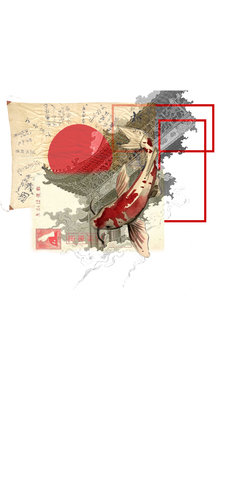

La mitología japonesa explica el origen del mundo, la naturaleza y la vida. Habla de los kami, que son espíritus que viven en todas las cosas.
Dioses principales
Amaterasu
Susanoo
Izanami
Tsukuyomi
Criaturas míticas
Kitsune
Tengu
Ryujin
Yamami
Historia: Amaterasu y la cueva
Amaterasu se escondió en una cueva después de pelear con su hermano. El mundo quedó en oscuridad. Los otros dioses hicieron un plan para que saliera y así volvió la luz.
Historia: Susanoo y la serpiente
Susanoo ayudó a una familia atacada por una serpiente gigante. La engañó con sake y la derrotó, salvando a la joven.
Lugares
Yomi es el mundo de los muertos.
Takamagahara es el lugar donde viven los dioses.